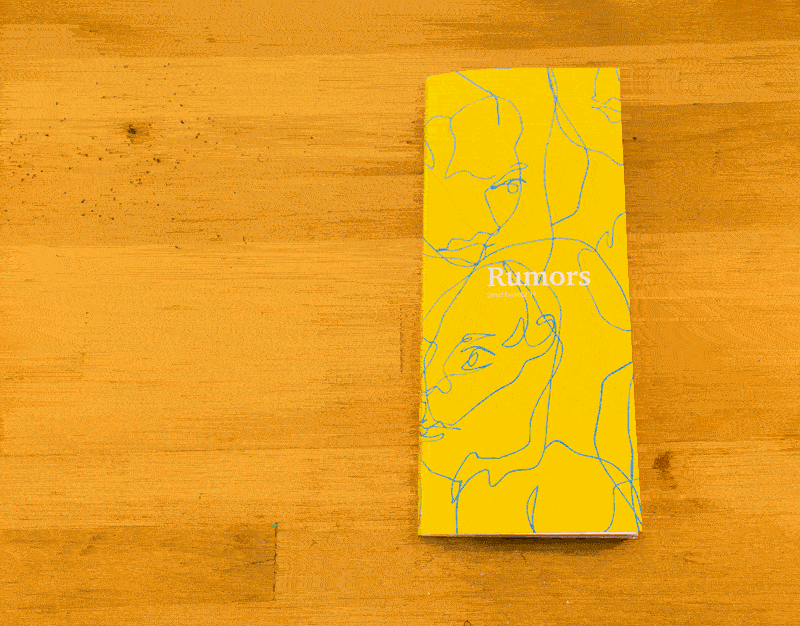

rumors
season one of the podcast serial examines the disappearance and murder of hae min lee of baltimore and the eventual conviction of her ex–boyfriend adnan syed. adnan is currently serving life in prison. the book is based on episode 11 and translates a variety of voices and timelines into a more easily digestable form.

there are various stories and narratives represented in the book: the accounts from adnan, jay wilds, the state's main witness, and adnan's classmates of what happened on the day of hae's disappearance, anecdotes from community members, and sarah koenig's own musings. every voice claims to be the authority; it becomes difficult to seperate fact from fiction.

the narrative is driven by koenig's narration. the series tout's itself as nonfiction, but episode 11 centers on phone calls from member's of the mosque adnan attended. some have good things to say about adnan, others not so much. while the question of innocence should be answered by facts and hard evidence, it becomes influenced by the stories people recall from years ago, stories that should be trivial but are treated as anything but.


<< back